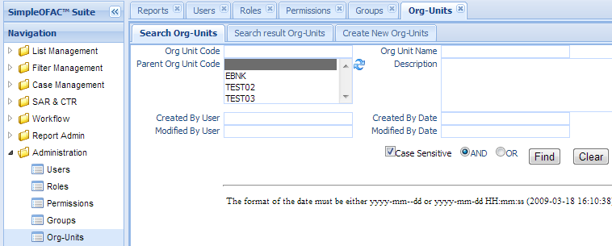
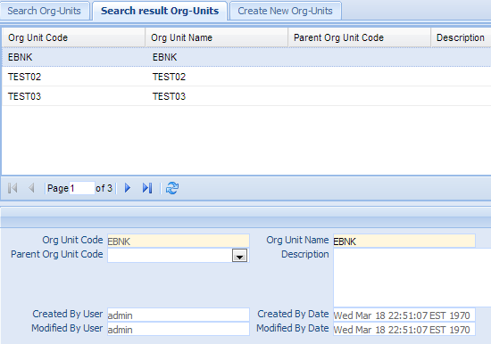
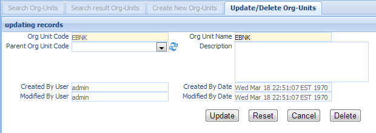
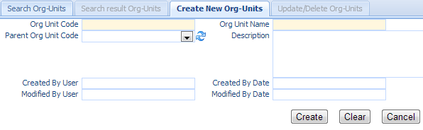

Organization Units¶
Organization Units are lines of business within the organization. Like sanction lists must be assigned to an Origin, alerts and customers and other entities within the system must be assigned to a particular Organization Unit. This enables the data to be split into different business areas that can be acted upon by specific users and groups of users, who also have roles that are assigned to specific Organization Units.
Click the Org-Units in the left navigation menu under Administration, a new Org-Units Tab folder will created in the right panel. There are 3 sub-Tab folders, Search Organization Units, Search Result Organization Units and Create New Organization Units.
Search Organization Units¶
Search Criteria
| Field Name | Description |
|---|---|
| OrgUnit Code | unique record identifier |
| OrgUnit Name | Name of this OrgUnit |
| Parent OrgUnit | Parent orgunit code |
| Description | Description of this OrgUnit |
| CreatedByDate | Date and Time when this entry is created |
| CreatedByUser | User who create this entry. |
| ModifiedByDate | Last modified date and time. |
| ModifiedByUser | Last modified user. |
| AND | Select AND radio box if you want those criteria add together. |
| OR | Select OR radio box if you want to get the result if either criteria meet |
Functional buttons¶
- Find: – click Find button to search.
- Clear:– click Clear button to clear all the criteria.
Search Result Organization Units¶
The top part is the table, shows the list of the OrgUnits that meet the search criteria. The bottom part is the details of the selected entry.
Update/Delete Organization Units¶
Double Click the selected record in the table to modify this entry. A new Tab folder “Update/Delete Org-Units” will be added, as show below.
Functional buttons¶
- Update: – make changes on the orgunits, and save and switch back to “Search result Org-Units” Tab. Some of the fields in this form are read only, like OrgUnit Code, created/modified user and date.
- Reset:– reset the data to its initial value, discard all the changes.
- Cancel:– Cancel this change and switch back to “Search result Org-Units” Tab.
- Delete:– Delete this entry and switch back to “Search result Org-Units” Tab.
Create New Organization Units¶
Select the “Create New Org-Units” Tab to create a new entry.
| Field Name | Description |
|---|---|
| OrgUnit Code | unique record identifier. |
| OrgUnit Name | Name of this OrgUnit. |
| Parent OrgUnit | Parent orgunit code, select from the dropdown list. |
| Description | Description of this OrgUnit. |
| CreatedByDate | Date and Time when this entry is created. It is a read only field. |
| CreatedByUser | User who create this this entry. It is a read only field. |
| ModifiedByDate | Last modified date and time; It is a read only field. |
| ModifiedByUser | Last modified user; It is a read only field. |
Functional buttons¶
- Create: – Click the Create button to create a new group entry and switch to “Search result Org-Units” Tab.
- Clear:– Click the Clear button to clear all the fields
- Cancel:– Click the Cancel button to cancel operation and switch back to “Search result Org-Units” Tab.